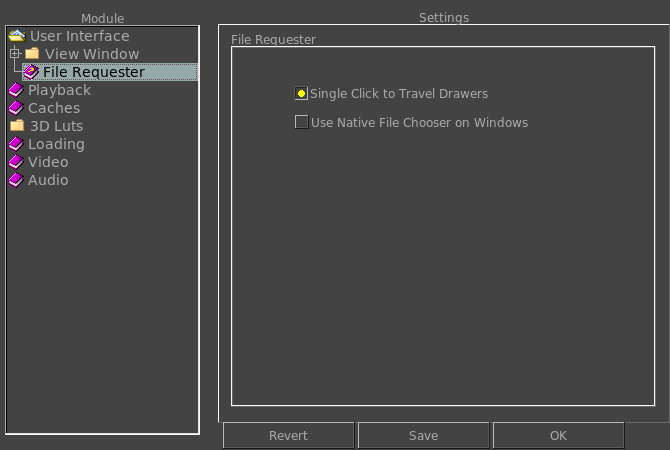

|  |
When this option is on, a single click will allow travelling thru directories. If turned off, you need two clicks to travel a directory. Here you can choose to use the native file requester on Windows instead of mrViewer's built-in one. |